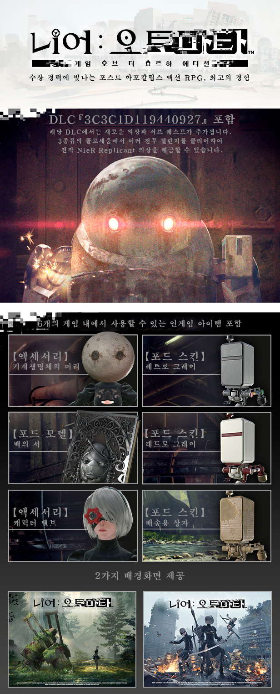
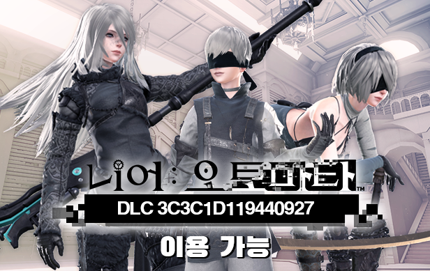

21년 7월 업데이트 기준으로 계속해서 한국어패치를 개선해나가고 있습니다.
많은 피드백부탁드립니다.
니어:오토마타 게임 오브 더 요르하 에디션
(스팀 페이지 개요 번역)

니어:오토마타 게임 오브 더 요르하 에디션에는 본게임과 함께 DLC와 수상 경력에 빛나는
종말 이후 액션 RPG를 경험할 수 있는 보너스 콘텐츠가 포함되어 있습니다:
- 3C3C1D119440927 DLC*
- 【액세서리】캐릭터 밸브
- 【포드 스킨】카드보드
- 【포드 스킨】레트로 그레이
- 【포드 스킨】레트로 레드
- 【포드 모델】백의 서
- 【액세서리】기계생명체의 머리
- 데스크탑 배경화면 제공(1024 x 768, 1280 x 1024, 1920 x 1080, 2560 x 1600)
*해당 콘텐츠는 게임 주요 스토리를 일부 진행해야 이용 가능합니다.
주요 게임 시나리오 진행 중 일부 장면에서는 이 콘텐츠를 이용할 수 없습니다.
DLC 「3C3C1D119440927」 세부정보

「니어:오토마타」의 DLC「3C3C1D119440927」가 출시되었으며 새롭게 추가된
3가지의 콜로세움과 서브 퀘스트가 포함되어 있습니다. 퀘스트를 완료하면 전작
「니어:레플리칸트」에서 등장하는 의상, 가면, 새로운 장비, 액세서리,
머리카락의 색을 바꿀 수 있게 해주는 헤어 스프레이, 플레이어의 주크박스에
특별한 음악 트랙을 추가해주는 레코드 등 다양한 보상을 얻을 수 있습니다!